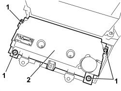

5040D18 AIR CONDITIONING CONTROL UNIT - R.R.
- Path
- Procedures > 50 AUXILIARY UNITS > 5040 AIR CONDITIONING CASING AND COMPONENTS > 5040D AIR CONDITIONING CONTROLS > 5040D18 AIR CONDITIONING CONTROL UNIT - R.R.
- Kind
- repair procedure (removal / refitting; the operation number is the code)
- Applies to
- all engines; all production periods
- Interactive page
- https://sloeber94.github.io/elrnDB/alfa/159/en/#/939010931
Applies to: all engines; all production periods
 Removing
Removing
 Refitting
RefittingRemove the three vents.
Op. 5010C34 AIR OUTLET ON CONSOLE - R+R
Remove the radio or, alternatively, the navigator.
Op. 5570T80 CAR RADIO EQUIPMENT - R+R
Op. 7040A17 AIR CONDITIONER CONTROLS
1. Undo the bolts.
2. Remove the control unit.

Applies to: all engines; all production periods
Refitting
Removing- Check that the control unit is not damaged.
- Position the control unit.
- Tighten the bolts.
Op. 7040A17 AIR CONDITIONER CONTROLS
Topics linked from this page (3)
- 5010C34 AIR OUTLET ON CONSOLE - R+R
- 5570T80 CAR RADIO EQUIPMENT - R+R
- 7040A17 AIR CONDITIONER CONTROLS
Topics that link to this page (36)
- S061 DASHBOARD CREAKING
- W20 POLLUTANT EMISSIONS IN VEHICLE
- 1820B21 MASTER CYLINDER (PUMP) - R R FOR RIGHT HAND DRIVE VERSIONS
- 3330B02 PEDAL ASSEMBLY - R.R
- 3330B23 BRAKE PEDAL - R.R. FOR RIGHT HAND DRIVE VERSIONS
- 3330B27 CLUTCH PEDAL - R.R. FOR RIGHT HAND DRIVE VERSIONS
- 3330B42 PEDAL UNIT SUPPORT - R.R. FOR RIGHT HAND DRIVE VERSIONS
- 3330D18 BRAKE SERVO R R FOR RIGHT HAND DRRIVE VERSIONS
- 5010D40 PASSENGER COMPARTMENT AIR SENSOR FAN - R+R
- 7040A17 AIR CONDITIONER CONTROLS
- E1050 CAN CONNECTION LINES - WIRING DIAGRAM
- E1050 CAN CONNECTION LINES - COMPONENT LOCATION
- E3030 DEMISTING REARSCREEN AND REAR VIEW MIRRORS - WIRING DIAGRAM
- E3030 DEMISTING REARSCREEN AND REAR VIEW MIRRORS - COMPONENT LOCATION
- E3030 DEMISTING REARSCREEN AND REAR VIEW MIRRORS - WIRING DIAGRAM
- E3030 DEMISTING REARSCREEN AND REAR VIEW MIRRORS - COMPONENT LOCATION
- E3030 DEMISTING REARSCREEN AND REAR VIEW MIRRORS - WIRING DIAGRAM
- E3030 DEMISTING REARSCREEN AND REAR VIEW MIRRORS - COMPONENT LOCATION
- E3030 DEMISTING REARSCREEN AND REAR VIEW MIRRORS - WIRING DIAGRAM
- E3030 DEMISTING REARSCREEN AND REAR VIEW MIRRORS - COMPONENT LOCATION
- E3030 DEMISTING REARSCREEN AND REAR VIEW MIRRORS - WIRING DIAGRAM
- E3030 DEMISTING REARSCREEN AND REAR VIEW MIRRORS - COMPONENT LOCATION
- E6015 ADDITIONAL HEATER - WIRING DIAGRAM
- E6015 ADDITIONAL HEATER - COMPONENT LOCATION
- E6015 ADDITIONAL HEATER - WIRING DIAGRAM
- E6015 ADDITIONAL HEATER - COMPONENT LOCATION
- E6020 AIR CONDITIONER - WIRING DIAGRAM
- E6020 AIR CONDITIONER - COMPONENT LOCATION
- E6020 AIR CONDITIONER - WIRING DIAGRAM
- E6020 AIR CONDITIONER - COMPONENT LOCATION
- E6021 COMPRESSOR ENGAGEMENT - WIRING DIAGRAM
- E6021 COMPRESSOR ENGAGEMENT - COMPONENT LOCATION
- E6021 COMPRESSOR ENGAGEMENT - WIRING DIAGRAM
- E6021 COMPRESSOR ENGAGEMENT - COMPONENT LOCATION
- E6021 COMPRESSOR ENGAGEMENT - WIRING DIAGRAM
- E6021 COMPRESSOR ENGAGEMENT - COMPONENT LOCATION